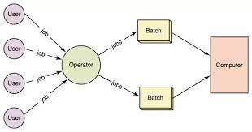

An operating system acts as an intermediary between the user of a computer and computer hardware. The purpose of an operating system is to provide an environment in which a user can execute programs conveniently and efficiently.
An operating system is a software that manages computer hardware. The hardware must provide appropriate mechanisms to ensure the correct operation of the computer system and to prevent user programs from interfering with the proper operation of the system.
An operating system is a software which performs all the basic tasks like file management, memory management, process management, handling input and output, and controlling peripheral devices such as disk drives and printers.
Some popular Operating Systems include Linux Operating System, Windows Operating System, VMS, OS/400, AIX, z/OS, etc.
An operating system is a program that acts as an interface between the user and the computer hardware and controls the execution of all kinds of programs.
An operating system is a program that controls the execution of application programs and acts as an interface between the user of a computer and the computer hardware.
Following are some of important functions of an operating System.
Memory management refers to management of Primary Memory or Main Memory. Main memory is a large array of words or bytes where each word or byte has its own address
Main memory provides a fast storage that can be accessed directly by the CPU. For a program to be executed, it must in the main memory. An Operating System does the following activities for memory management −
In multiprogramming environment, the OS decides which process gets the processor when and for how much time. This function is called process scheduling. An Operating System does the following activities for processor management −
An Operating System manages device communication via their respective drivers. It does the following activities for device management −
A file system is normally organized into directories for easy navigation and usage. These directories may contain files and other directions.
An Operating System does the following activities for file management −
By means of password and similar other techniques, it prevents unauthorized access to programs and data.
Recording delays between request for a service and response from the system.
Keeping track of time and resources used by various jobs and users.
Production of dumps, traces, error messages, and other debugging and error detecting aids.
Coordination and assignment of compilers, interpreters, assemblers and other software to the various users of the computer systems.
Every computer must have an operating system to run other programs. The operating system coordinates the use of the hardware among the various system programs and application programs for various users. It simply provides an environment within which other programs can do useful work.
The operating system is a set of special programs that run on a computer system that allows it to work properly. It performs basic tasks such as recognizing input from the keyboard, keeping track of files and directories on the disk, sending output to the display screen, and controlling peripheral devices.
The module that keeps track of the status of devices is called the I/O traffic controller. Each I/O device has a device handler that resides in a separate process associated with that device.
The I/O subsystem consists of
Drivers for specific hardware devices.
The input to an assembler is an assembly language program. The output is an object program plus information that enables the loader to prepare the object program for execution. At one time, the computer programmer had at his disposal a basic machine that interpreted, through hardware, certain fundamental instructions. He would program this computer by writing a series of ones and Zeros (Machine language), place them into the memory of the machine.
The High-level languages- examples are FORTRAN, COBOL, ALGOL, and PL/I are processed by compilers and interpreters. A compiler is a program that accepts a source program in a “high-level language “and produces a corresponding object program. An interpreter is a program that appears to execute a source program as if it was machine language. The same name (FORTRAN, COBOL, etc.) is often used to designate both a compiler and its associated language.
A Loader is a routine that loads an object program and prepares it for execution. There are various loading schemes: absolute, relocating, and direct-linking. In general, the loader must load, relocate and link the object program. The loader is a program that places programs into memory and prepares them for execution. In a simple loading scheme, the assembler outputs the machine language translation of a program on a secondary device and a loader places it in the core. The loader places into memory the machine language version of the user’s program and transfers control to it. Since the loader program is much smaller than the assembler, those make more core available to the user’s program.
This type of operating system does not interact with the computer directly. There is an operator which takes similar jobs having the same requirement and group them into batches. It is the responsibility of the operator to sort jobs with similar needs.
Advantages of Batch Operating System:
Disadvantages of Batch Operating System:
Examples of Batch based Operating System: Payroll System, Bank Statements, etc.
Each task is given some time to execute so that all the tasks work smoothly. Each user gets the time of CPU as they use a single system. These systems are also known as Multitasking Systems. The task can be from a single user or different users also. The time that each task gets to execute is called quantum. After this time interval is over OS switches over to the next task.
Advantages of Time-Sharing OS:
Disadvantages of Time-Sharing OS:
Examples of Time-Sharing OSs are: Multics, Unix, etc.
These types of the operating system is a recent advancement in the world of computer technology and are being widely accepted all over the world and, that too, with a great pace. Various autonomous interconnected computers communicate with each other using a shared communication network. Independent systems possess their own memory unit and CPU. These are referred to as loosely coupled systems or distributed systems. These system’s processors differ in size and function. The major benefit of working with these types of the operating system is that it is always possible that one user can access the files or software which are not actually present on his system but some other system connected within this network i.e., remote access is enabled within the devices connected in that network.
Advantages of Distributed Operating System:
Disadvantages of Distributed Operating System:
Examples of Distributed Operating System are- LOCUS, etc.
These systems run on a server and provide the capability to manage data, users, groups, security, applications, and other networking functions. These types of operating systems allow shared access of files, printers, security, applications, and other networking functions over a small private network. One more important aspect of Network Operating Systems is that all the users are well aware of the underlying configuration, of all other users within the network, their individual connections, etc. and that’s why these computers are popularly known as tightly coupled systems.
Advantages of Network Operating System:
Disadvantages of Network Operating System:
Examples of Network Operating System are: Microsoft Windows Server 2003, Microsoft Windows Server 2008, UNIX, Linux, Mac OS X, Novell NetWare, and BSD, etc.
These types of OSs serve real-time systems. The time interval required to process and respond to inputs is very small. This time interval is called response time. Real-time systems are used when there are time requirements that are very strict like missile systems, air traffic control systems, robots, etc.
Two types of Real-Time Operating System which are as follows:
These OSs are meant for applications where time constraints are very strict and even the shortest possible delay is not acceptable. These systems are built for saving life like automatic parachutes or airbags which are required to be readily available in case of any accident. Virtual memory is rarely found in these systems.
These OSs are for applications where for time-constraint is less strict.
Advantages of Real-Time Operating System:
Disadvantages of Real-Time Operating System:
Examples of Real-Time Operating Systems are: Scientific experiments, medical imaging systems, industrial control systems, weapon systems, robots, air traffic control systems, etc.